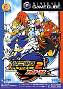
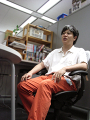

「クリエイターズ インタビュー」 第6回目は、
『ソニックアドベンチャー2』『ソニックアドベンチャー2 バトル』でストーリーを担当した前川 司郎を紹介！
プロフィール：
前川 司郎（まえかわ しろう）
セガ/第一ＧＥ研究開発部/プランニングセクション
『ＡＺＥＬ パンツァードラグーンＲＰＧ』マップデザイン
『ソニックアドベンチャー』マップデザイン、チャオゲームデザイン
『ソニックアドベンチャー2』『ソニックアドベンチャー2 バトル』シナリオ、演出、イベント製作
『ソニックヒーローズ』ゲームデザイン、シナリオ、演出
『ソニックＸ』ストーリー監修
2006年8月1日から開始しました「クリエイターズインタビュー アンケート」で、
8月中旬までにいただいたコメントの中で一番多かったのが
「『ソニックアドベンチャー2』『ソニックアドベンチャー2 バトル』のストーリーが
もの凄く感動したので、ストーリーを担当した人の話しが是非聞きたい」
という内容でした。
そこで、今回のクリエイターズインタビューは
『ソニックアドベンチャー2』『ソニックアドベンチャー2 バトル』
（以下、『ソニアド2』『ソニアド2 バトル』）のストーリーを担当した
前川 司郎さんにお話しを伺いたいと思います。
どうぞよろしくお願いいたします！
こちらこそ、よろしくお願いいたしますデス。ハイ。
今回のアンケート結果を見て、前川さんはいかが思われましたか？
正直すごくうれしいです！
「自分の作ったゲームで誰かを感動させること」
が、僕の人生目標でもあったので、
これでいつ死んでもいいって事になりましたね。（笑）
前川さんは、いつからソニックチームに加わったのですか？
ストーリーを担当したのはどのタイトルからですか？
今まででストーリーを担当したタイトル（ソニックに限らず）を教えていただけますか？
ソニックチームには『ソニックアドベンチャー』（以下『ソニアド』）から参加しています。
本格的にストーリーを担当したのは『ソニアド2』からですね。
ソニック以外だとサターン時代の『ＡＺＥＬ パンツァードラグーンＲＰＧ』の中で
ちょこっとだけイベントのシナリオを書かせてもらった程度です。
主人公とヒロインの会話イベントをでっち上げ、勝手にラブな雰囲気を出したりしたので
まわりからヒンシュクをかったりしました。
硬派なゲームでしたからね。（苦笑）
ストーリー制作は、どのような手順を踏んで作られていくのでしょうか？
アイディアの源（みなもと）は何ですか？
参考にしているものなどありますでしょうか？
うう、これが不思議なもので自分が書いた話を後で読み返したりすると、
自分でもどうやってこんな話をかいたのか頭をひねります。
確か『ソニアド2』の時には、僕が先にストーリーと舞台をあらかた決めて
そこにゲームのステージを当てはめていくという形でした。
逆に『ソニックヒーローズ』では最初にアクションステージありきで、
その間をストーリーで埋めていくというカンジでしたね。
アイデアの源はそれこそ小さいころから見ている漫画やアニメの影響が大きいと思います。
『ソニアド2』『ソニアド2 バトル』の自分の好きなシーンに、シャドウとマリアが
スペースコロニーから地球を眺めるというシーンがあるのですが
このシーンは僕の中の3大漫画の一つ「ぼくの地球をまもって」の影響がすごく大きく出てますね。
実際マリアの声も「ぼくの地球をまもって」のヒロイン役の声優さん（白鳥由里さん）が
担当することになって運命みたいなものを感じましたね。
『ソニアド2』『ソニアド2 バトル』のストーリー制作では、どのような点で苦労されましたか？
悩んだこと、楽しかったことも合わせて教えていただけますか？
なぜか自分ひとりだけが
「今度のソニックは宇宙にいくんだ！だってもう21世紀になるから！」
と理由もなくはしゃいでいて、周りがポカーンとなっていたのを思い出します。
結局それにみんなを巻き込んで
「じゃあしょうがないから一緒に宇宙にいくか」
みたいな雰囲気で
スペースコロニーのステージが出来ちゃったワケなんですが…。
そういうなんだか熱に浮かされて根拠もなくやっちゃったけど、
チームのみんながそれに賛同してくれて想像以上にいい舞台
（アクションステージやイベントステージ）が出来たときには
すごく嬉しかったし、
楽しかったです。
悩んだことは…
やはりスケジュールの都合で泣く泣くカットしたシーンがあって、それが心残りでならなかったですね。
もしあの時神様が現れて、
「そのシーンを作ってやる代わりにお前の腕を一本よこせ」
と言われたら
迷わず腕を切り落としたんじゃないかと思うほど悩みました。
まさに断腸の思いというのはこれのことをいうのだなあと痛感した瞬間でしたね。